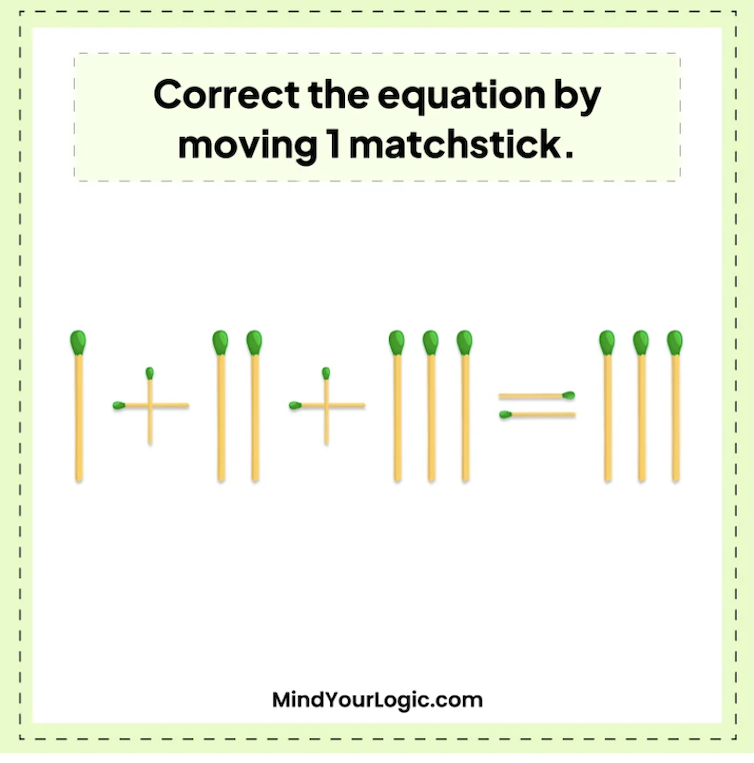
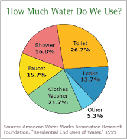

Introduction
I decided to re-explore a concept brought upon in my Second Blog Post, where I tested if AI could solve riddles. This blog post will explore how AI interacts with images.
Returning to the Riddles
I began by providing the llava-v1.6-24b model the same image from my initial post, prompting it to state the number of matches in the image.

While the correct answer is 15 matches, the model said that “There are 12 matches in the image.”
I attempted to correct it by saying, “note that matches in this image are of varying sizes, some are smaller than others, but are still considered matches.” However, it still believed its answer was correct, it said “Thank you for the clarification. In that case, there are 12 matches in total, including the varying sizes.”
I then attempted to correct it and prompted it with “this is incorrect, please recalculate and provide reasoning for your answer.” However, its response was “I apologize for the mistake. Let’s recalculate the number of matches in the image.
There are 12 matches in total, including the varying sizes. The image shows a total of 12 matches, with some being smaller than others.”
In this case, the model failed to recognize the correct number of matches in the image.
Interpreting Data Visualizations
I was curious to see how the model interpreted data and provided it a sample pie chart I found from google.

I prompted it with the goal of giving it context about the type of graph and exactly what I wanted to learn about the data. I prompted it with “based on the image provided, interpret the data and describe how water usage is broken down in the pie chart.” I was shocked by its response:
“The pie chart in the image illustrates the breakdown of water usage in a residential setting. It is divided into six categories, each representing a different source of water consumption. Here’s the breakdown as shown in the chart:
Shower - 16.8% This category represents the water used for showering, which is the second-largest contributor to residential water usage.
Toilet - 26.7% The toilet is the largest single source of water usage in a residential setting, accounting for nearly a quarter of the total.
Faucet - 15.7% Water used at the faucet, likely for activities such as washing hands and brushing teeth, is the third-largest category.
Clothes Washer - 21.7% The water used for washing clothes in a clothes washer is the fourth-largest category.
Leaks - 13.7% Water leaks, which can occur in various parts of a home, such as faucets, pipes, or appliances, account for 13.7% of residential water usage.
Other - 5.3% This category includes all other sources of water usage that do not fit into the other five categories. It is the smallest category on the chart.
The chart is sourced from the American Water Works Association Research Foundation, and it is based on data from 1999. It provides a visual representation of where most of the water used in a residential home goes, highlighting the importance of water conservation efforts in areas such as toilet and faucet usage.”
Shockingly, it was able to successfully describe the pie chart, the exact breakdown of the chart, as well as where the image was from. This was a stark contrast from the previous experiment I ran with the matches puzzle.
Conclusion
I was overall pleased with the results and felt like the model did a solid job of recognizing the image and interpreting the data. However, I noticed that it struggled to recognize the “matches” when they were different sizes in the first image. In the future, I hope to explore how the model reacts to different types of charts and data.